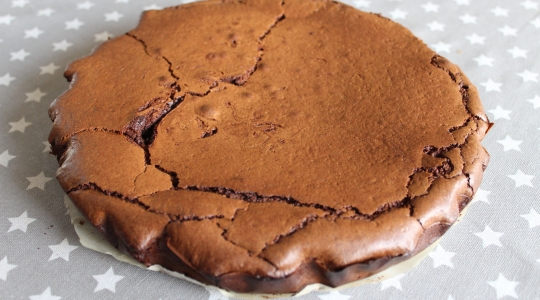

Chocolate cake

Description
This is a cake recipe that my mom always do and that I therefore always do.
It's in my opinion the best chocolate cake one could do. The photo is not contractual.
Ingredients
- 400 g black chocolate
- 80 g almond powder
- 120 g sugar
- 120 g flour
- 200 g butter
- 4 eggs
Steps
- preheat the oven at 180 degree celsius
- Melt the chocolate gently
- Incorporate the butter in little chunks
- In a bowl put the flour, among the almond powder
- Whiten the eggs with the sugar
- Create a crater, in the bowl and put the eggs
- Turn the mixture with a wood spoon, and make attention not to form any flour lumps
Return to home page